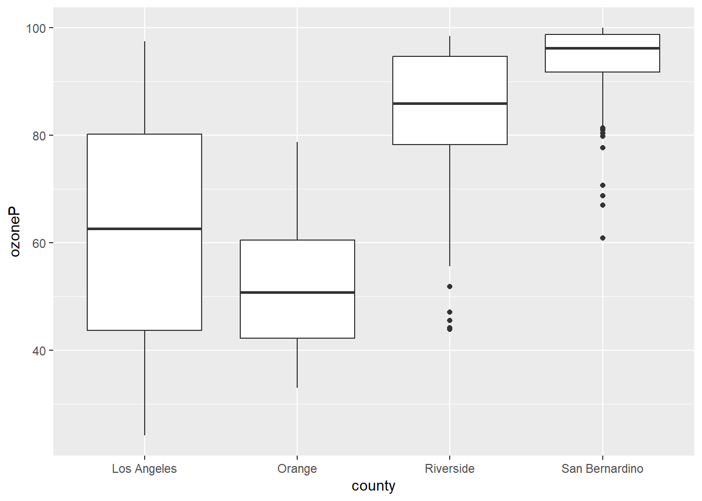
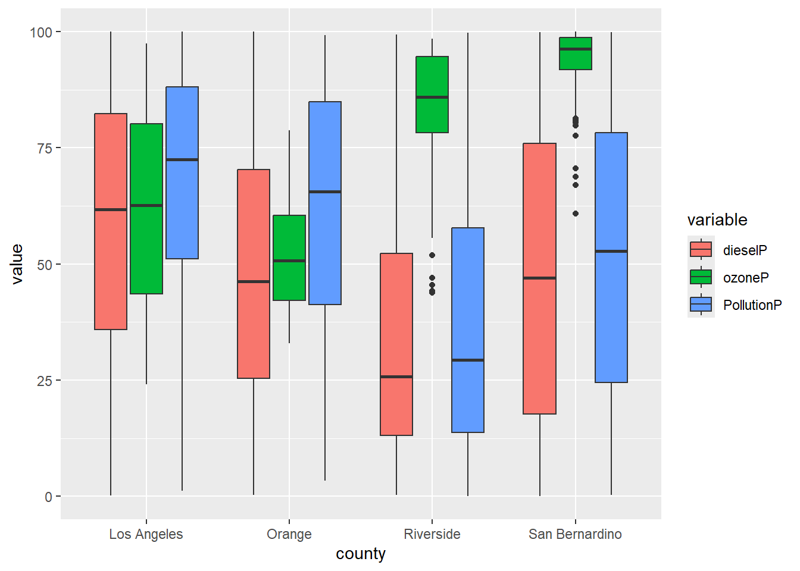
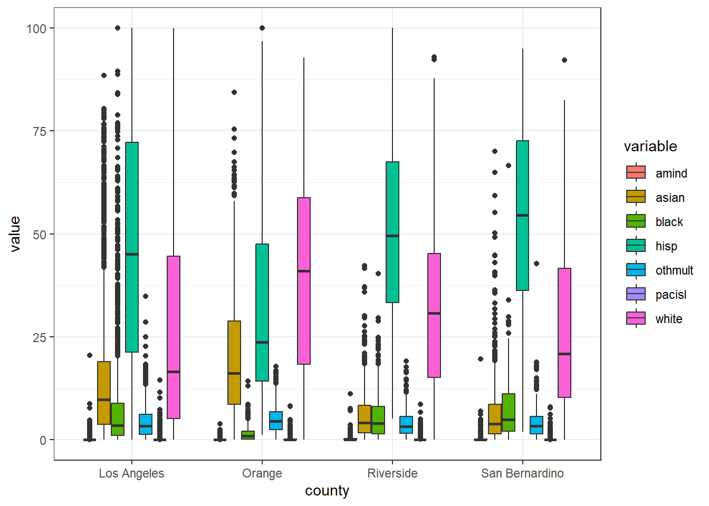
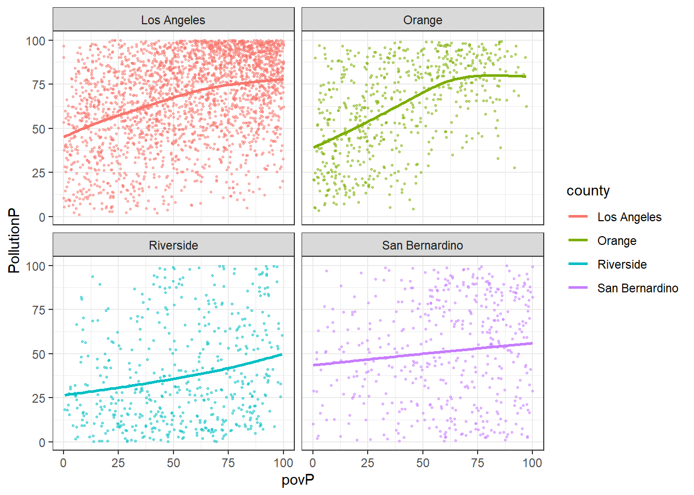
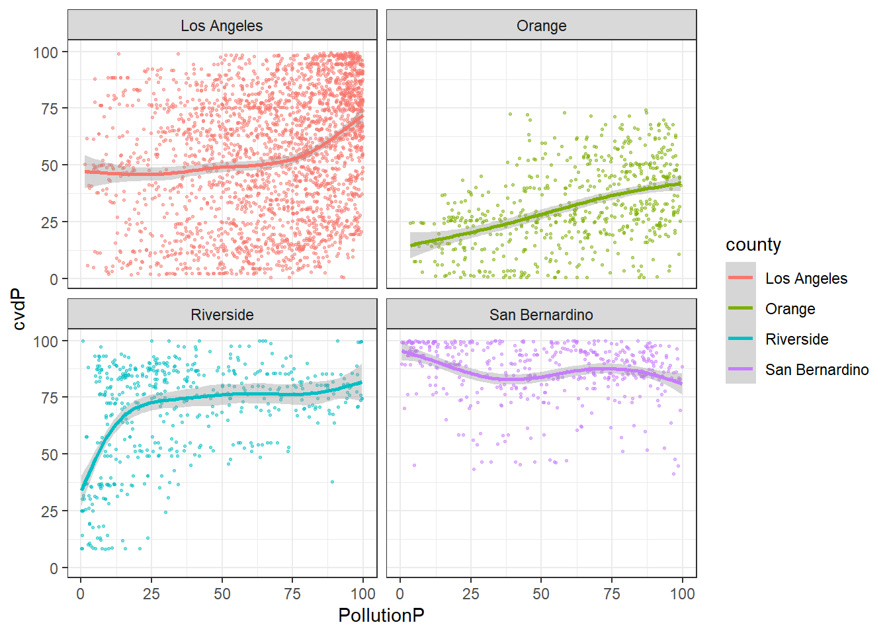
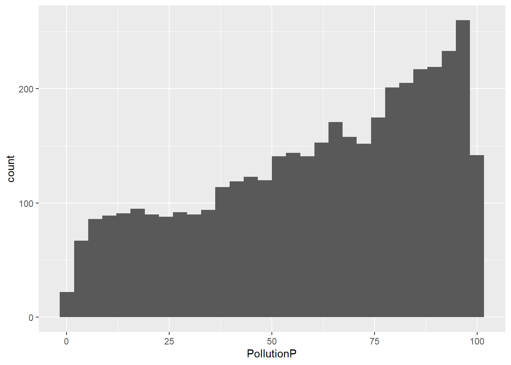
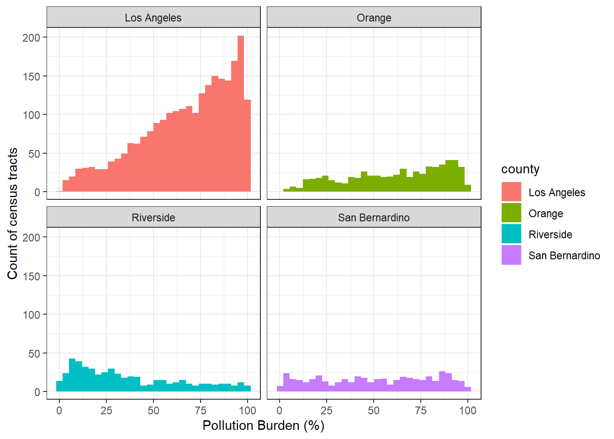
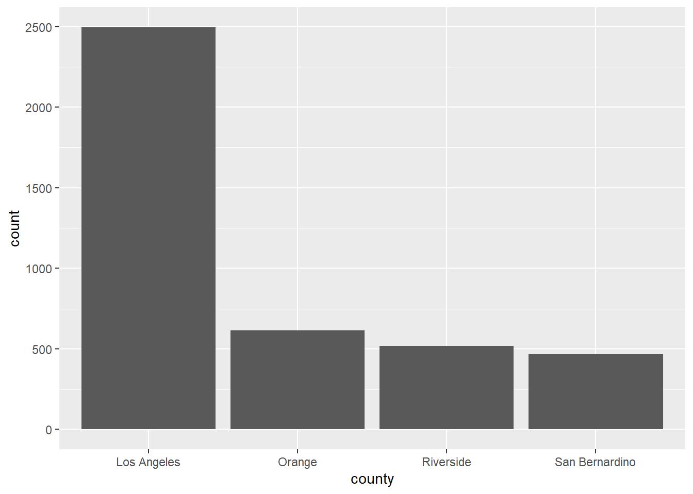
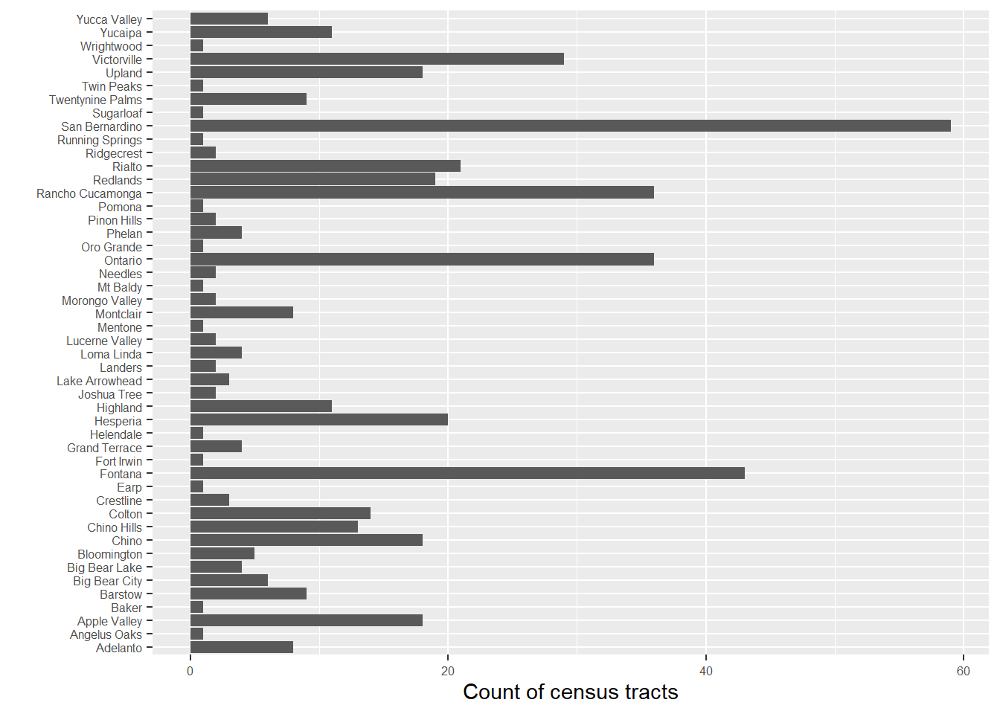

8 EJ - Data Visualization of CalEnviroScreen
Today we will practice visualization-based analysis of EJ data using R.
The Tidyverse conceptual model Figure 8.1

8.1 Load and Import Steps
Load the libraries we’ll be using today.
Import the SoCalEJ dataset, but note the key difference in the second code chunk.
st_set_geometry(value = NULL) removes the geometry column.
URL.path <- 'https://raw.githubusercontent.com/RadicalResearchLLC/EA078_Fall2026/main/SoCalEJ.geojson'
SoCalEJ <- st_read(URL.path) |>
st_set_geometry(value = NULL) #this removes the geometry column8.2 Basic Visualization
Let’s compare some variables by county to see how the counties are different.
First, what are the column names of the SoCalEJ dataset? names() can produce that output.
#|echo: true
#|
names(SoCalEJ) [1] "tract" "zipcode" "approx_loc" "county" "region"
[6] "ACS2024Pop" "CIscore" "CIscoreP" "ozone" "ozoneP"
[11] "pm" "pmP" "diesel" "dieselP" "pest"
[16] "pestP" "RSEIhaz" "RSEIhazP" "traffic" "trafficP"
[21] "drink" "drinkP" "lead" "leadP" "cleanups"
[26] "cleanupsP" "gwthreats" "gwthreatsP" "haz" "hazP"
[31] "iwb" "iwbP" "swis" "swisP" "SmATS"
[36] "SmATSP" "Pollution" "PollutionS" "PollutionP" "asthma"
[41] "asthmaP" "lbw" "lbwP" "cvd" "cvdP"
[46] "diabetes" "diabetesP" "edu" "eduP" "ling"
[51] "lingP" "pov" "povP" "unemp" "unempP"
[56] "housingB" "housingBP" "PopChar" "PopCharSco" "PopCharP"
[61] "pop_und10" "pop_10_64" "pop_ov64" "hisp" "white"
[66] "black" "amind" "asian" "pacisl" "othmult" Pick your own variable to plot - do not pick ozoneP which is my variable for now.
Use filter(...) to only keep values above or equal to zero. We don’t want to include census tracts that are missing data that have -999 values.
Figure 8.2 shows the distribution of ozone exposure percentages by county. This way to display a distribution is the geom_boxplot() geometry.
SoCalEJ |>
filter(ozoneP >= 0) |> # This selects records with values greater or equal to zero for a given column
ggplot(aes(x = county, y = ozoneP)) +
geom_boxplot()
There are clear differences in ozone by county, with the Inland counties having higher ozone than the coastal counties. The differences are statistically significant.
Unfortunately, a wide dataset is not great at displaying multivariate information in ggplot. A bit of tidying is needed to display multiple variables.
8.3 Tidy and Transform
I am going to demonstrate a few somewhat fancy data manipulation techniques. This is somewhat advanced database programming. While this is very helpful for visualization, it goes beyond the things I expect you to learn for this course.
This code does three things.
- Remove the geometry using
st_set_geometry(value = NULL) - Transform the data table from wide to long using
pivot_longer(...) - Remove values below zero using
filter()
# select socioeconomic indicators and make them narrow - only include counties above 70%
SoCal_narrow <- SoCalEJ |>
pivot_longer(cols = c(6:70), names_to = 'variable', values_to = 'value') |> #data science table manipulation
filter(value >=0) #select only values greater than or equal to zeroLet’s compare the SoCalEJ and SoCal_narrow datasets using head().
head(SoCalEJ) tract zipcode approx_loc county region ACS2024Pop CIscore
1 6037101110 91042 Tujunga Los Angeles LA Area 4294 18.68846
2 6037101122 91042 Tujunga Los Angeles LA Area 4124 14.24994
3 6037101220 91042 Tujunga Los Angeles LA Area 3467 20.74278
4 6037101221 91042 Tujunga Los Angeles LA Area 3593 21.03214
5 6037101222 91042 Tujunga Los Angeles LA Area 2290 21.75822
6 6037101300 91042 Tujunga Los Angeles LA Area 4253 23.07347
CIscoreP ozone ozoneP pm pmP diesel dieselP pest
1 35.15997 0.05994662 86.83286 7.845737 34.90007 0.014008717 10.245136 0
2 23.14846 0.06029644 87.60158 7.571501 28.48671 0.005732877 3.957349 0
3 40.39632 0.05962913 86.28377 7.949166 36.96464 0.015712350 11.432340 0
4 41.14912 0.05972464 86.49242 7.845737 34.90007 0.026083511 20.391338 0
5 42.92040 0.05958011 86.17395 7.949166 36.96464 0.020808255 15.862372 0
6 45.84302 0.05954186 86.05315 7.505948 27.22381 0.019772238 14.906013 0
pestP RSEIhaz RSEIhazP traffic trafficP drink drinkP lead leadP
1 0 373.0470 47.04002 124.440 7.134220 34.60056 38.03452 59.53088 61.36868
2 0 366.1133 46.75339 55.903 1.505991 34.60056 38.03452 50.26846 51.50843
3 0 405.2410 48.20858 180.233 14.631197 34.60056 38.03452 69.19284 71.65040
4 0 378.7407 47.26050 156.434 11.377377 34.60056 38.03452 53.85682 55.32387
5 0 402.7723 48.05424 160.469 11.872046 34.60056 38.03452 58.35586 59.98225
6 0 451.2137 50.40238 617.070 65.472134 47.63508 52.52281 65.67346 67.72405
cleanups cleanupsP gwthreats gwthreatsP haz hazP iwb iwbP swis
1 0 0 0.0 0.00000 0.00 0.000000 0 0.00000 1.25
2 0 0 0.0 0.00000 0.00 0.000000 0 0.00000 0.00
3 0 0 0.0 0.00000 0.10 13.924794 0 0.00000 0.00
4 0 0 0.0 0.00000 0.00 0.000000 0 0.00000 0.50
5 0 0 0.0 0.00000 0.01 1.586369 0 0.00000 0.00
6 0 0 16.3 61.06221 0.10 13.924794 6 52.50044 0.00
swisP SmATS SmATSP Pollution PollutionS PollutionP asthma asthmaP lbw
1 35.30479 44.50 35.664571 27.73903 3.366650 12.310564 25.72 26.41905 5.23
2 0.00000 11.35 8.408172 21.95445 2.664583 4.766088 25.65 26.24270 5.43
3 0.00000 65.45 50.718455 29.19174 3.542964 14.858335 25.81 26.58437 5.98
4 19.64804 38.05 30.972160 27.29391 3.312626 11.596749 25.81 26.58437 4.70
5 0.00000 27.70 22.171082 26.06519 3.163498 9.499231 25.81 26.58437 5.68
6 0.00000 37.85 30.758868 39.15016 4.751603 38.502087 24.32 23.10151 3.73
lbwP cvd cvdP diabetes diabetesP edu eduP ling
1 41.40343 18.62 79.38326 11.4 50.95921 13.75817 56.04713 17.636139
2 46.66065 18.42 77.68722 11.3 49.79052 17.42686 63.93953 12.481645
3 59.02527 18.92 80.62775 11.9 57.93826 15.70093 60.26012 9.002976
4 29.94134 18.92 80.62775 12.0 59.09592 28.42544 81.18052 35.010338
5 52.24504 18.92 80.62775 11.7 55.04961 17.70417 64.48422 38.176034
6 13.21074 17.51 72.58811 11.3 49.79052 10.01838 45.15340 7.935484
lingP pov povP unemp unempP housingB housingBP PopChar
1 84.46334 18.53959 34.26612 4.847472 36.48904 23.54839 77.84922 53.68210
2 72.50839 13.58234 21.67902 8.281389 71.58750 14.07942 36.98448 51.71753
3 59.95448 26.53591 53.65557 6.626201 56.51352 17.77778 55.57650 56.61797
4 97.79588 39.06426 76.25263 3.596215 21.34831 30.45614 92.10643 61.39955
5 98.44274 41.07300 79.01781 6.500000 55.25642 52.15054 99.80044 66.51351
6 54.63584 20.03323 38.25904 8.001850 69.16231 19.64912 64.02439 46.95986
PopCharSco PopCharP pop_und10 pop_10_64 pop_ov64 hisp white black amind
1 5.551054 57.15709 9.90 73.01 17.09 32.91 53.91 1.96 0.19
2 5.347905 54.09056 8.75 67.53 23.71 11.88 71.27 0.29 0.00
3 5.854640 61.23104 8.22 76.75 15.03 37.32 45.51 0.26 1.27
4 6.349084 68.34939 9.49 69.80 20.71 31.00 50.68 4.01 0.00
5 6.877899 76.19838 6.81 73.71 19.48 40.39 51.18 0.61 0.00
6 4.855933 46.88365 10.06 60.83 29.11 15.02 75.45 0.33 0.00
asian pacisl othmult
1 7.82 0.19 3.03
2 12.34 0.00 4.22
3 13.96 0.00 1.67
4 5.15 0.00 9.16
5 1.27 2.10 4.45
6 4.51 0.00 4.68head(SoCal_narrow)# A tibble: 6 × 7
tract zipcode approx_loc county region variable value
<dbl> <int> <chr> <chr> <chr> <chr> <dbl>
1 6037101110 91042 Tujunga Los Angeles LA Area ACS2024Pop 4294
2 6037101110 91042 Tujunga Los Angeles LA Area CIscore 18.7
3 6037101110 91042 Tujunga Los Angeles LA Area CIscoreP 35.2
4 6037101110 91042 Tujunga Los Angeles LA Area ozone 0.0599
5 6037101110 91042 Tujunga Los Angeles LA Area ozoneP 86.8
6 6037101110 91042 Tujunga Los Angeles LA Area pm 7.85 The SoCal_narrow dataset has taken the 60+ columns from SoCalEJ and condensed them into a single column indicating the variable and another column indicating the value for that variable. This is very useful for grouping and visualizing by category of information.
Now let’s display a box plot with three pollution variables simultaneously using this narrow dataset as shown in Figure 8.3. We again use filter(), but we combine it with the %in% operator to select multiple variables to display.

Cool!
8.3.1 Exercise 1.
- Create a boxplot that displays five simultaneous variables by County, either by adding two new variables and/or replacing the existing variables. I recommend showing the percentage values that end in P.
- Choose a different
theme() - Show a box plot of the six racial and ethnic variables - Hispanic, White, AfricanAm, NativeAm, OtherMult, and AAPI. It should look something like Figure 8.4

8.3.2 Explore the Dataset
Data visualization isn’t just a final product. To get to the final product usually requires doing significant visual exploration to reveal information and knowledge.
Let’s walk through a few examples of methods to explore the data.
8.3.2.1 Scatter plots
Is there a relationship between a dependent and an independent variable or 3? Scatter plots and fits help to examine that.
Figure 8.5 investigates poverty as an independent variable with the pollution burden indicator by county.
SoCalEJ |>
filter(povP >= 0) |>
ggplot(aes(x = povP, y = PollutionP, color = county)) +
geom_point(size = 0.5, alpha = 0.5) +
geom_smooth(se = FALSE) +
theme_bw() +
facet_wrap(~county)
Poverty percentage in a census tract increases pollution burden in Orange, LA, and Riverside County but has little impact in San Bernardino. Riverside is the least ‘pollution’ burdened on average, while both LA and Orange County have the highest pollution burden.
Let’s look at one other scatter plot of estimated pollution burden and a health outcome.
SoCalEJ |>
filter(PollutionP >= 0 & cvdP >= 0) |>
ggplot(aes(x = PollutionP, y = cvdP, color = county)) +
geom_point(size = 0.5, alpha = 0.5) +
geom_smooth() +
theme_bw() +
facet_wrap(~county)
Very strange here. Orange County has a positive relationship, but the other counties have non-linear relationships between these two variables.
8.3.2.2 Exercise 2.
- Generate a hypothesis of a causal relationship that you can test. Does variable X cause variable Y to increase/decrease?
- Prepare a four-county scatter-plot of your selected variables you think may have a causal relationship.
- Examine the results. Is there a relationship? Does it vary by county?
8.3.2.3 Histograms
Histograms are useful ways to explore a distribution of values.
The basic histogram is shown in Figure 8.7. The distribution of high pollution burden census tracts is skewed right towards higher values (i.e., worst scores).
SoCalEJ |>
filter(PollutionP >= 0) |>
ggplot(aes(x = PollutionP)) +
geom_histogram() #+
#theme_bw() +
#facet_wrap(~County)
Now let’s make that prettier and add a facet_wrap() by county as shown in Figure 8.8. I’ll also fix the axis labels using the labs() function to name them real names.
SoCalEJ |>
filter(PollutionP >= 0) |>
ggplot(aes(x = PollutionP, fill = county)) +
geom_histogram() +
theme_bw() +
facet_wrap(~county) +
labs(x = 'Pollution Burden (%)',
y = 'Count of census tracts')
Now, we can clearly see very big differences in census tract counts and distributions of the pollution burden variable. LA County has a massive distribution of highly burdened census tracts.
8.3.2.4 Exercise 3.
- Choose a variable you think is interesting and make a four-county histogram plot of it.
- Is there a story that you can start to craft with your histogram?
8.3.3 Bar and Column plots (column is usually better)
Basic example of a bar plot is shown in Figure 8.9.

There are more census tracts in LA than the other counties, because far more people live in LA than the other counties.
We can try to put the places in there, but it gets messy as shown in fig-Bar2 when looking at San Bernardino places. I’ve switched them to the y-axis to make it horizontal and made the font text smaller using

Note that geom_bar() works well with categorical variables, but doesn’t like continuous and numerical values.